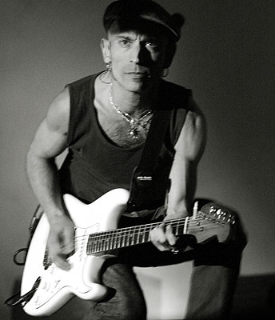
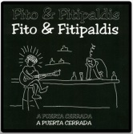
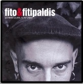
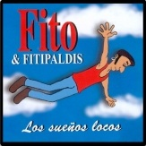
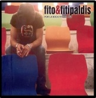

|
Adolfo Cabrales, Fito, nace en 1966 en el barrio bilbaíno de Zabala. Pasa parte de su infancia y adolescencia en ciudades como Laredo y Málaga, pero acaba volviendo a su Bilbao natal. En sus años mozos trabaja de camarero en un club de alterne de la calle Las Cortes (popularmente conocida como La Palanca), propiedad de su padre. |
 |



